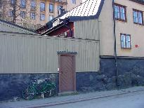
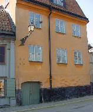
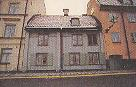
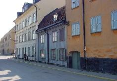

Nr 13, 14. Fjällgatan 36-42
Fjällgatan 36, ett litet envånings stenhus, och Fjällgatan 38, ett stenhus och ett trähus, torde väl alla vara från 1700-talet. 38-an har från 1860-talet till fram emot sekelskiftet ägts av olika mamseller eller fröknar Malander. Nu äger staden samtliga dessa hus liksom nummer 40, ett större stenhus från 1800-talets senare del. Ett annat, mindre hus, Fjällgatan 42 som på 1870-talet ägdes av ensjöman vid namn Strindberg, försvann för Klippgatans (nuv. Lilla Erstagatan) framdragning till Fjällgatan.
Fastigheten nr 36 består av två sammanbyggda trähus uppförda mellan 1723 och 1730. Huset åt gatan är reveterat. Enligt 1730 års mantalslängd står ett trähus (nr 38) om två rum, torvtäckt tak och källare på tomten. Gården bebos av kofferdisjömannen Erich Holmberg med makan Britta och deras två barn. En hyresgäst är timmermansänkan Elisabeth Malm, »gammal och fattig«. Mantalslängden 1755 anger att skepparänkan Britta Holmberg sålt gården till sin måg Petter Forsberg. Maken Erich blev tydligen befordrad till skeppare före sin död. Huset har om- och påbyggts, ty nu skattar man för sex fönsterlufter. År 1758 bygger Petter Forsberg till ett stenhus. Vid brandförsäkringen 1772 framgår av beskrivningen att det äldre trähuset består av var sin lägenhet på botten- resp övervåningen. Stenhuset som har botten-, över- och vindsvåning har en lägenhet på varje plan. Trähusdelen är försedd med locklistpanel och inklädda knutar i form av pilastrar. Bottenvåningens fönster är försedda med luckor. Stenhuset har gemensam portgång med trähuset. Huset har slammad tjärad sockel och ockrafärgad slätputs. Takfoten är murad. Fjällgatan 40 uppfördes 1879 och förvärvades av staden 1907. På fasaden sitter en gatlykta av äldre modell. Flera av husen efter Fjällgatan har gatubelysning i samma utförande. |    Trähuset kan vara från 1738, stenhuset byggdes 1758.  |